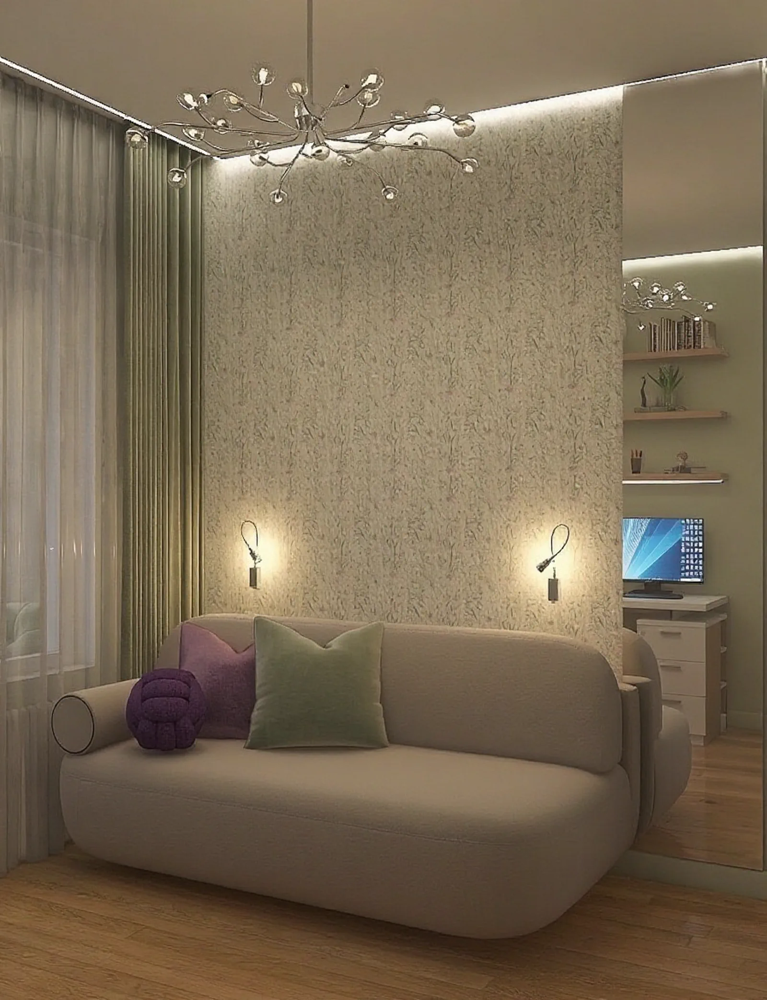
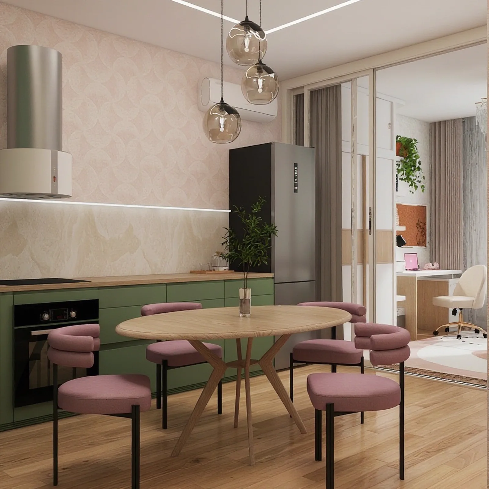

2-комнатная 63,14 м² — три варианта перепланировки
Семья из четырёх человек, две девочки 8 и 15 лет. Показаны три варианта перепланировки.
- 63,14 м² площадь
- 2-комнатная квартира тип объекта
- 10,9 м² комната

Что хотел заказчик
2к квартира 63,14 м²: 1 комната — 10,9 м², 2 комната — 17,75 м², небольшая кухня 9,72 м², 2 санузла и гардеробная. Необходимо разместить семью из 4 человек (в т.ч. 2 девочки 8 и 15 лет).
РешениеЧто я сделала
Вариант 1: увеличить гардеробную за счёт коридора и организовать там постирочную с вентиляцией, гидроизоляцией, электричеством и водой. Большую комнату отдать детям — мебель расположена симметрично, никто не обделен естественным освещением. У родителей отдельная спальня. Убрав одну из дверей большой комнаты, получили нишу для вместительного шкафа в прихожую. Вариант 2: объединение кухни и части гостиной создаёт сердце квартиры — большое светлое пространство; стеклянная перегородка пропускает свет в родительскую спальню. Вариант 3: кухня переносится на территорию гардеробной, вместо неё — кабинет (спальня для подростка), гостиная делится стеклянной перегородкой на детскую у окна и столовую рядом с кухней.
Визуализации проекта
-

tg-346-04 -

tg-315-02 -

tg-315-04 -

tg-315-05 -

tg-315-01 -

tg-346-01
Хотите так же?
Пришлите планировку и пару слов о том, как вы живёте. Ответим в течение рабочего дня и предложим формат сотрудничества.
Обсудить проект